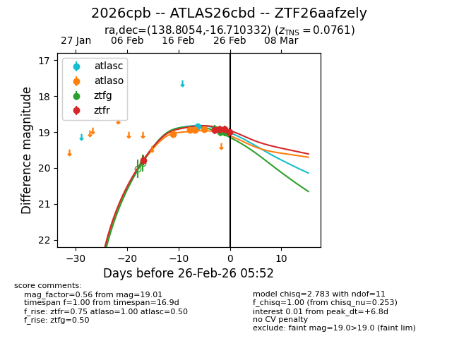
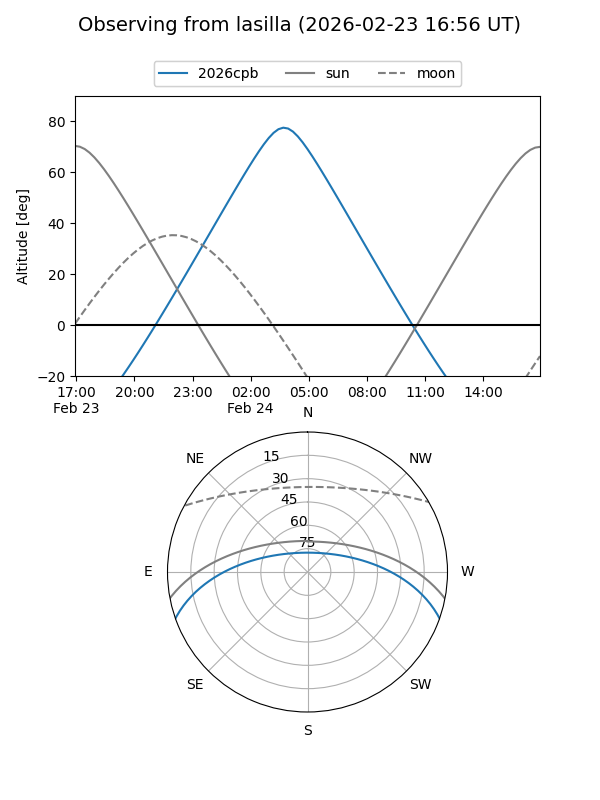
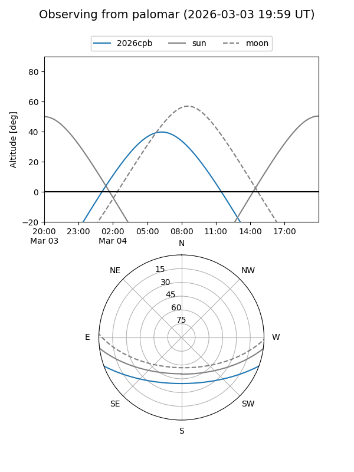
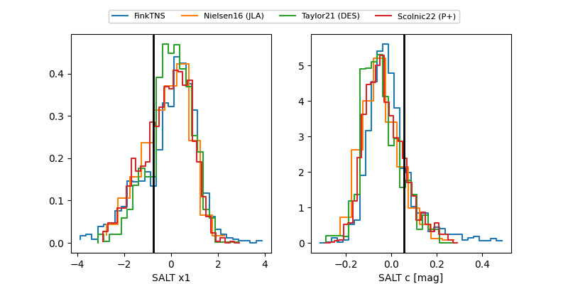

2026cpb
Target 2026cpb at 2026-02-26 05:54
Aliases and brokers:
FINK: link
Lasair: link
ALeRCE: link
TNS: link
YSE: link
alt names
ZTF26aafzely (ztf,fink_ztf)
2026cpb (tns,yse)
ATLAS26cbd (atlas)
Coordinates:
equatorial (ra, dec) = 138.8054,-16.71033
equatorial (HMS+DMS) = 09:15:13.29,-16:42:37.19
galactic (l, b) = (246.3833,+21.67055)
Flags:
confirmed ia
Photometry:
last atlasc=18.83, atlaso=18.91, ztfg=18.99, ztfr=19.01
1 atlasc, 4 atlaso, 3 ztfg, 5 ztfr detections
Lightcurve

Visibility


Additional plots
